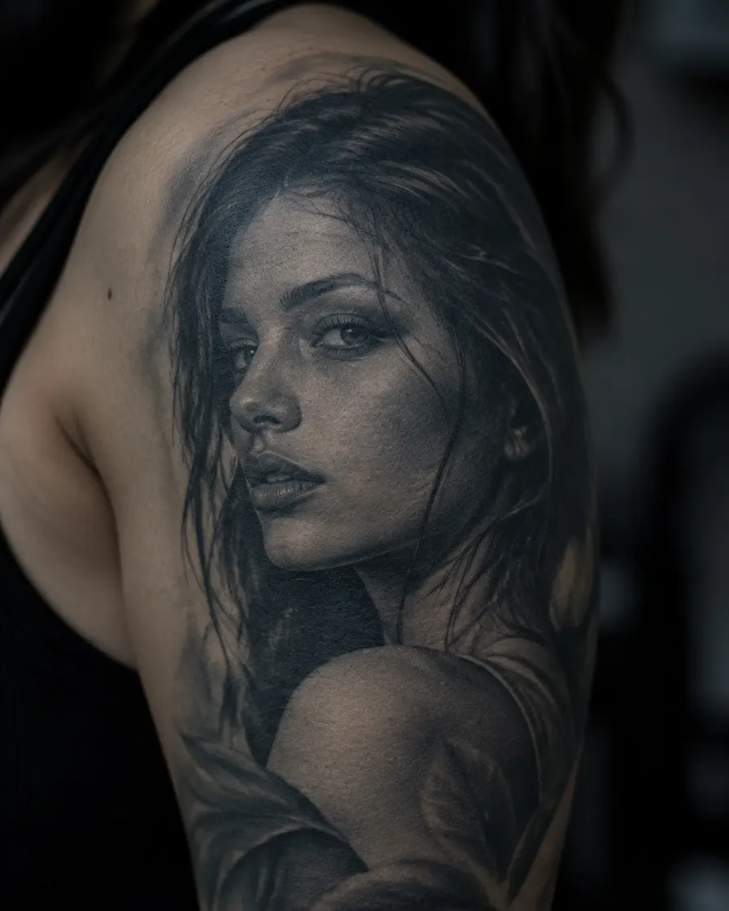
Realistico
Ritratti, animali, volti: sfumature costruite strato su strato.
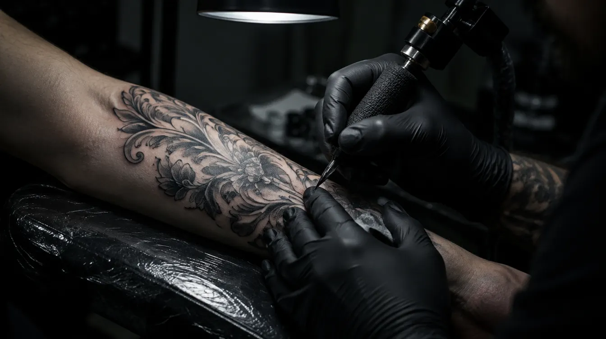
Pescara · Realistico e ornamentaleTatuaggi su misura in bianco e nero. Disegnati per te, per la tua pelle, per durare.
Muovi la luce: sotto c'è lo stencil, sopra il lavoro guarito.
Passa il mouse sull'immagine.
Immagini illustrative create per questa demo, non lavori reali dello studio.
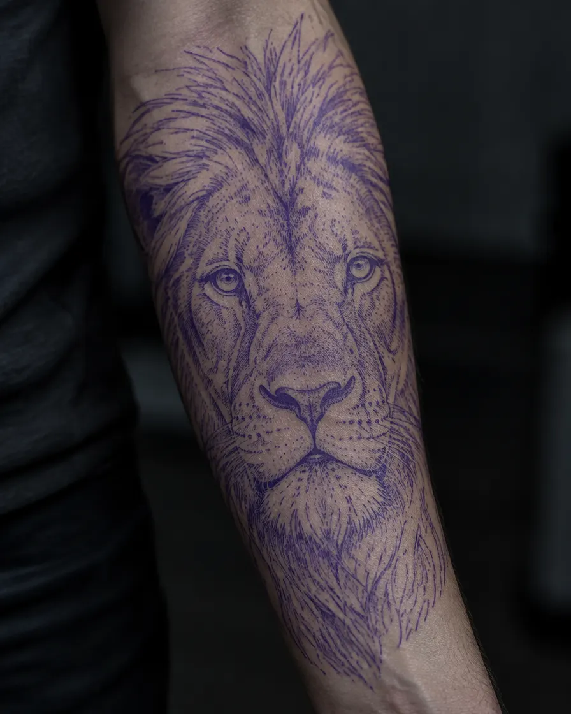
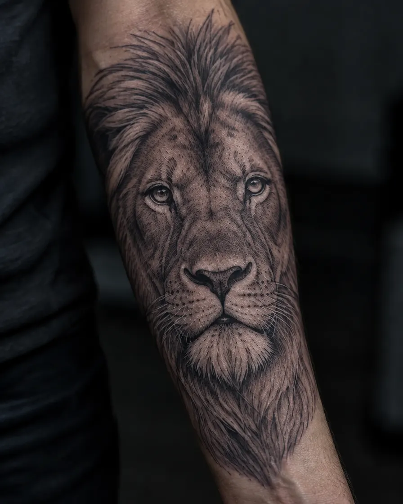
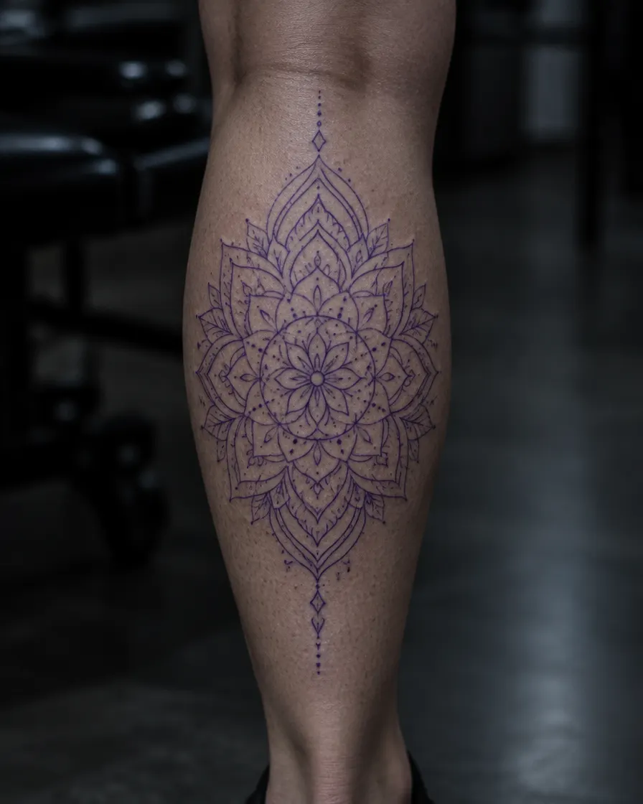
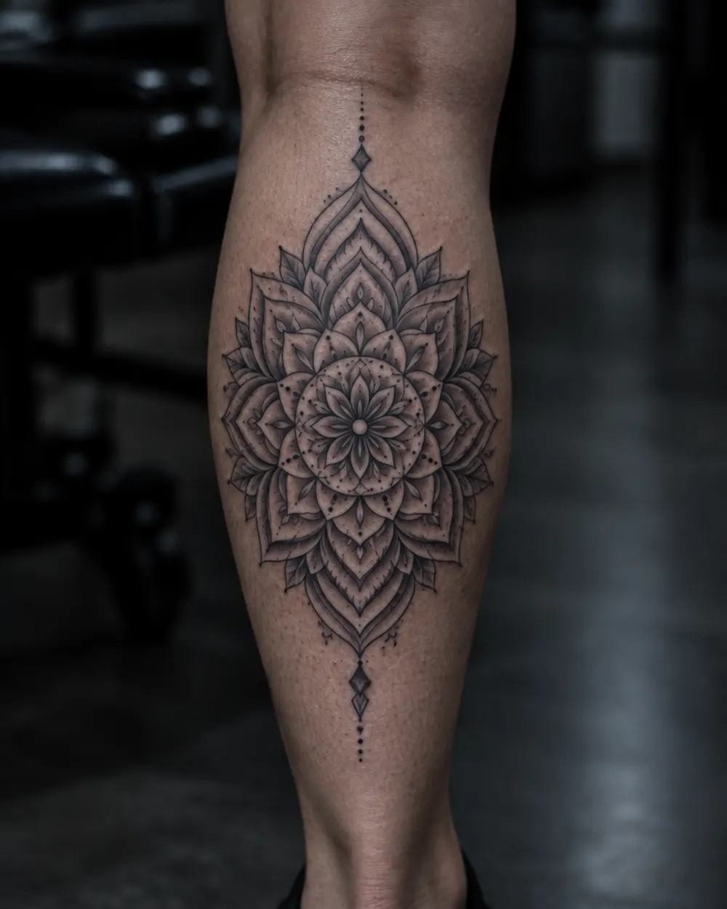
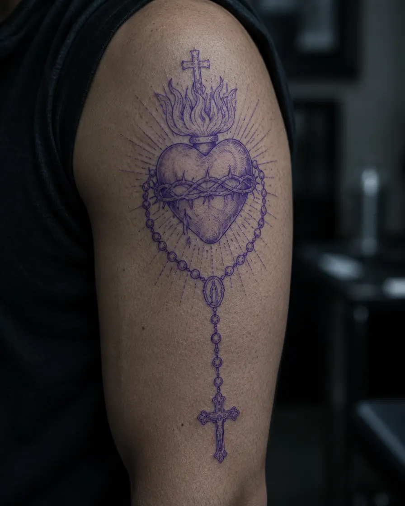
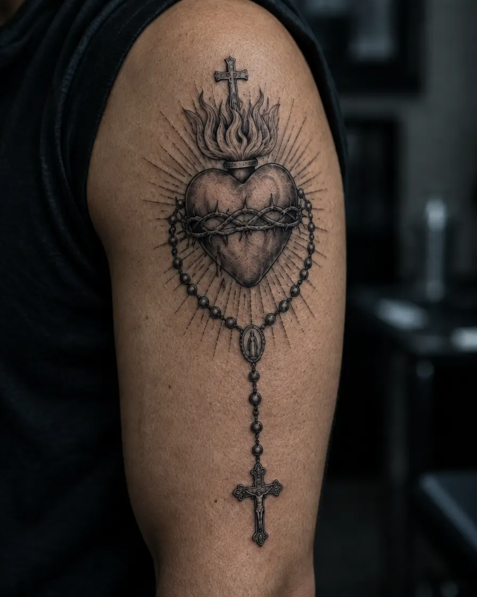

Ritratti, animali, volti: sfumature costruite strato su strato.
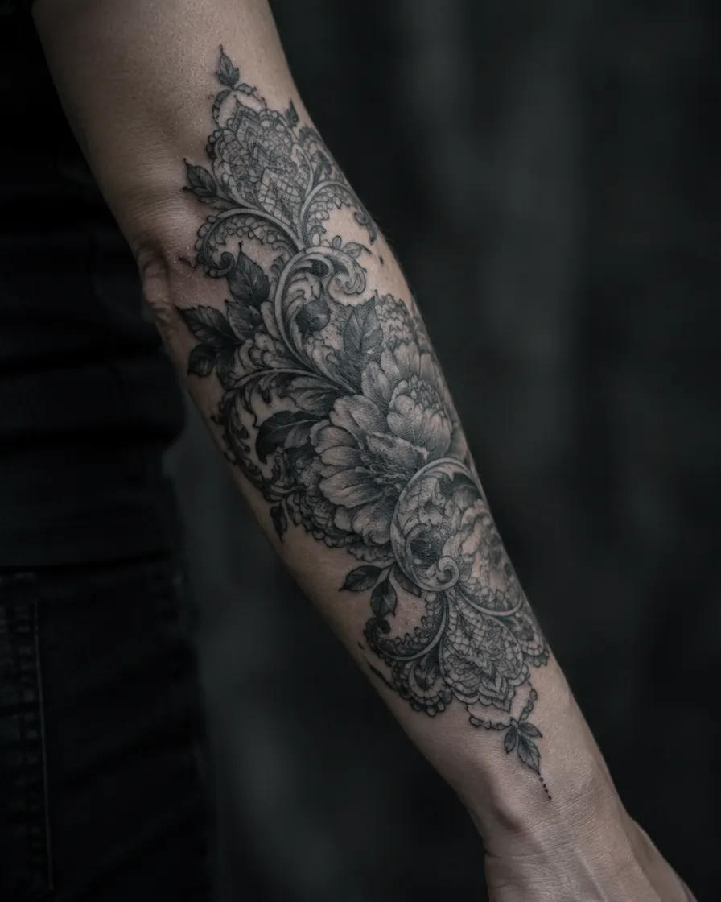
Mandala, pizzi, geometrie che seguono il muscolo.
Iconografia religiosa e simbolica, reinterpretata.
Ci racconti l'idea, guardiamo la zona. Gratis, senza impegno.
Il disegno nasce su misura. Lo rivedi prima di confermare.
Stencil, controllo, poi l'ago. Materiale monouso, sempre.
Ti seguiamo nelle settimane dopo. Il ritocco è incluso.
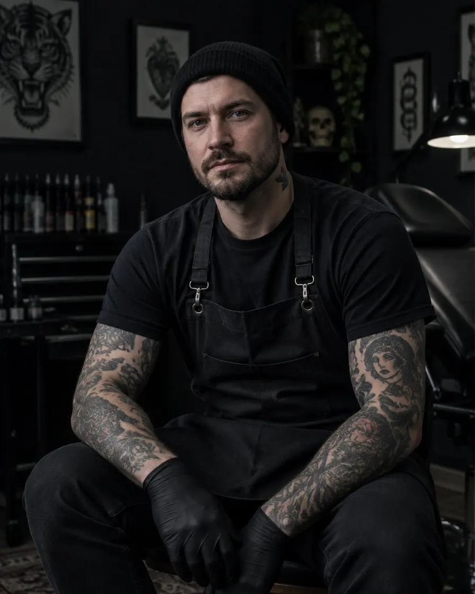
Nomi e volti di fantasia, creati per questa demo.
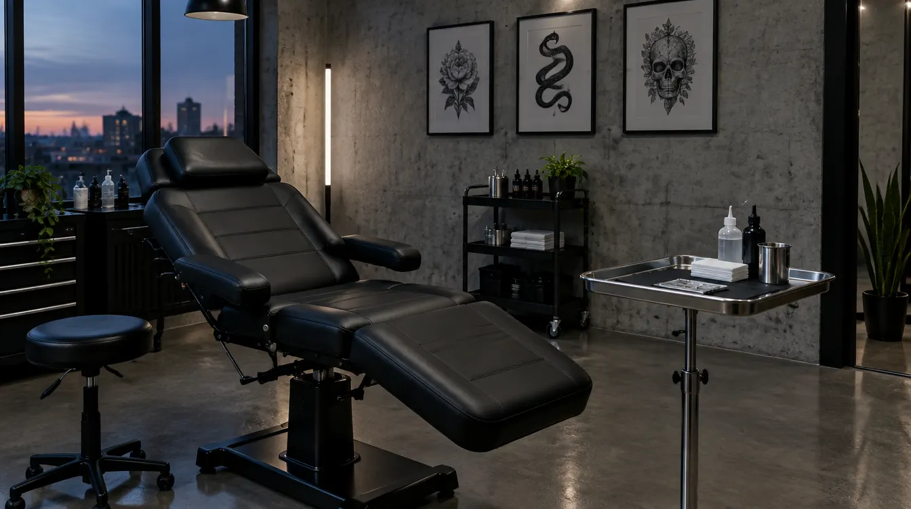
Blocchi la data con un acconto del 30%, scalato dal totale.
Conferma e promemoria 48 ore prima della seduta.
Alla 5ª seduta, −15% sulla sessione.
Chi presenti ha −10% sul primo tatuaggio, tu un timbro in più.
Numeri d'esempio, non dati reali. Dati di ricerca generali, non risultati della demo.
Dipende da zona e sensibilità. Ti diciamo prima cosa aspettarti e facciamo pause ogni volta che servono.
Dipende da misura e dettaglio: te lo diciamo in consulenza, prima di iniziare. Un tatuaggio piccolo parte da circa €80 (cifra d'esempio).
Il 30% blocca la data e viene scalato dal totale. Esempio di regola: se annulli con meno di 48 ore di preavviso l'acconto non è rimborsabile.
Sì, entro 3 mesi dalla seduta.
Ti diamo le istruzioni per iscritto: lavare con delicatezza, crema in strato sottile, niente sole né piscina nei primi giorni. Per ogni dubbio ci scrivi su WhatsApp.